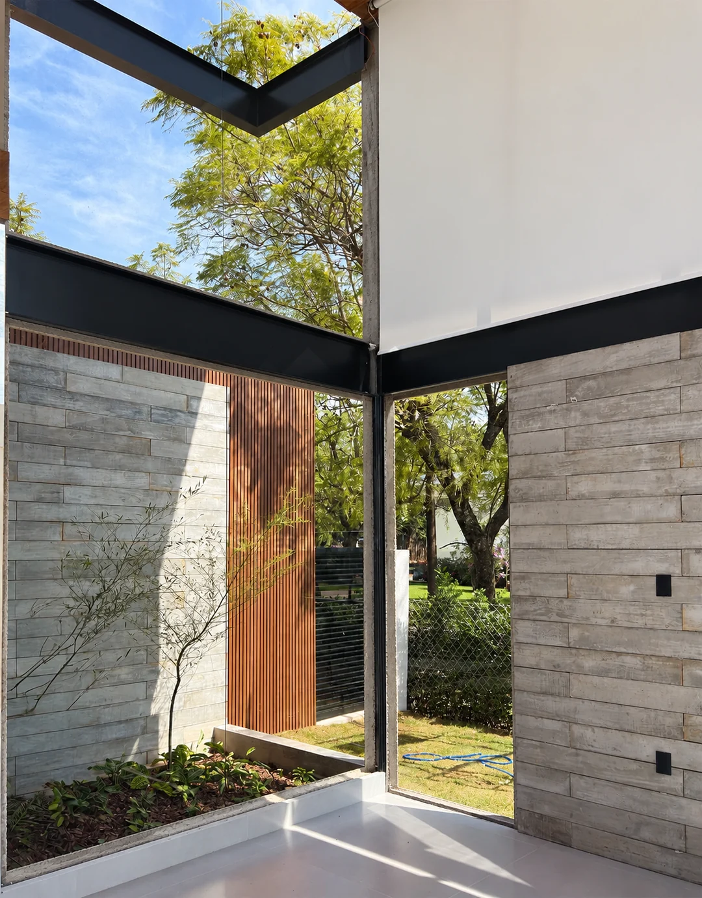

Campos de Santo Antônio 2
Esquadrias por toda a casa, boxes, guarda-corpo em vidro e fachada em ripados de alumínio.
Ver publicação do projetoSalto, Itu, Indaiatuba e região
Soluções em alumínio e vidro, sob medida para o seu projeto. Mais luz, integração e um acabamento que valoriza cada ambiente.
Há mais de 12 anos em projetos residenciais e comerciais.

Do detalhe de um ambiente ao projeto da sua casa.Veja os depoimentos dos clientes
4,3 134 avaliações no GoogleConsulta em outubro de 2026Vidros e esquadrias fazem parte da arquitetura. Veja como essas soluções aparecem em obras da Estrela.
Esquadrias por toda a casa, boxes, guarda-corpo em vidro e fachada em ripados de alumínio.
Ver publicação do projetoAlumínio preto, fachada envidraçada, portas panorâmicas e guarda-corpos para escada e mezanino.
Ver publicação do projetoAcompanhamento de obra em Indaiatuba
Linha Perfetta Minimalista Slim: perfis finos que acompanham a proposta do ambiente.
Ver publicação da obraVidros e esquadrias acompanham a arquitetura e conectam o ambiente à luz natural. Arraste a divisória para comparar.
O antes é uma simulação por IA criada a partir desta fotografia. O depois é o registro real apresentado pela Estrela.
Conversar sobre meu projeto
Arraste a divisória ou use as setas do teclado para comparar.
Mensagens, vídeos e retornos compartilhados por clientes e parceiros. Veja os relatos na íntegra.
Uma obra completa ou um ambiente específico. Conheça as possibilidades e converse com a equipe sobre o que o seu projeto precisa.
Conversar sobre meu projetoEsquadrias sob medida, com diferentes acabamentos. Portas de correr, grandes vãos e soluções para integrar ambientes e aproveitar a luz natural.
Fachadas envidraçadas e ripados de alumínio para compor a arquitetura do imóvel. As possibilidades dependem do projeto e do local de instalação.
Soluções em vidro para escadas, mezaninos e sacadas, com uma presença leve no ambiente. Consulte a configuração adequada ao seu projeto.
Boxes e fechamentos de banheiro com medidas e acabamentos definidos para o ambiente.
Portões de alumínio e possibilidades de cobertura. Fale com a equipe para verificar os materiais, modelos e condições disponíveis.
Você pode entrar em contato mesmo se a obra ainda estiver no planejamento.
Informe a cidade, o tipo de solução e em que etapa está a construção ou reforma.
Se tiver planta, fotos ou referências, tenha esse material em mãos para a conversa com a equipe.
Converse sobre medidas, acabamentos, investimento e programação antes de definir os próximos passos.

Há mais de 12 anos, a Estrela trabalha com soluções em vidro e alumínio para projetos residenciais e comerciais.
Com base em Salto e atuação em Itu, Indaiatuba e região, a empresa reúne atendimento personalizado e soluções sob medida para valorizar o imóvel.
À frente da Estrela, Laís Dias compartilha o dia a dia da empresa, os projetos e as possibilidades que cada obra traz.
Acompanhar a Estrela no InstagramA Estrela atende Salto, Itu, Indaiatuba e região. Para outras localidades, consulte a equipe antes de solicitar o orçamento.
Sim. Você pode conversar sobre uma solução específica, como um box, uma porta ou um guarda-corpo, ou sobre os vidros e esquadrias de uma obra completa.
Você pode começar contando o que precisa e em que etapa está a obra. Se tiver medidas, planta ou fotos, compartilhe com a equipe para orientar a conversa e verificar a necessidade de medição.
A programação depende do projeto e da disponibilidade da agenda. Consulte o prazo com a equipe e alinhe a previsão de instalação com as outras etapas da sua obra.
Sim. O atendimento inclui projetos residenciais e comerciais, com soluções em vidro e alumínio sob medida.
Conte o que você precisa. A conversa continua no WhatsApp da Estrela.
(11) 95387-1057Av. José Maria Marques de Oliveira, 1190
Residencial Alvorada, Salto/SP